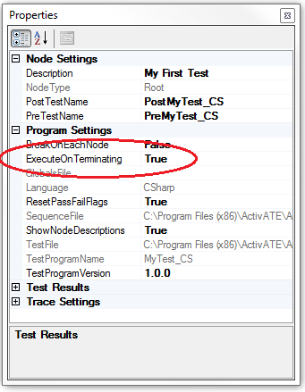
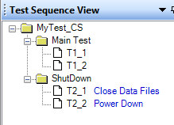

When test programs are being debugged, it is often necessary for the test engineer to stop the test program execution by pressing the STOP button in the ActivATE test program IDE. When this occurs, the test program will stop after completing the currently executing test node. This may be dangerous in that power supplies could be turned on - switches are closed, data files are open, etc.
ActivATE supports a function call that is automatically called when the STOP button is pressed. The function name "OnTerminating" is the same - no matter the test program language. For this function to be called by the framework, the property "ExecuteOnTerminating" must be set to true in the test program properties window.
This function is NOT created automatically. Developers must create this method in their test program.
In the example test program below, we open the Test Program Properties window to toggle this flag.
|  |  |
Sample C# code for OnTerminating() is shown below. Note that this method MUST return a value - typically Boolean, else it will fail.
|
///
<summary> |
|
Sample VBScript Code is shown below.
' Execute our
shutdown procedure if the user presses STOP
Function OnTerminating()
TraceLog.WriteLine ("OnTerminating()
Called")
' Call our shutdown functions to
clean up
call T2_1()
call T2_2()
'
Must always return a value
OnTerminating =
true
End Function
see also:
Astronics Test Systems
Last updated on August 12, 2015 by D. Ignacio